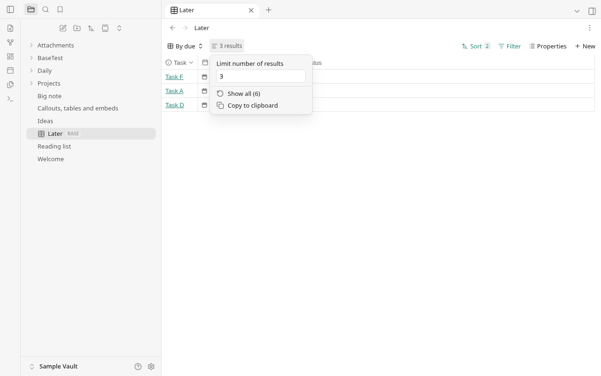
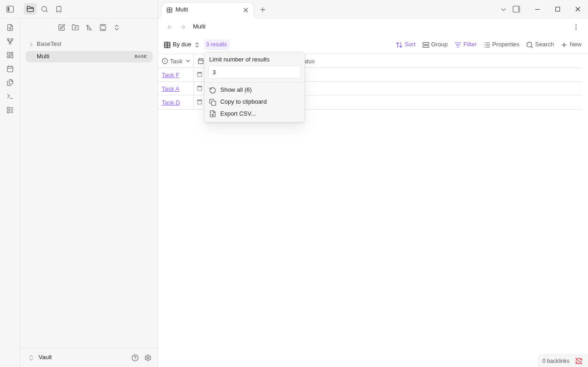
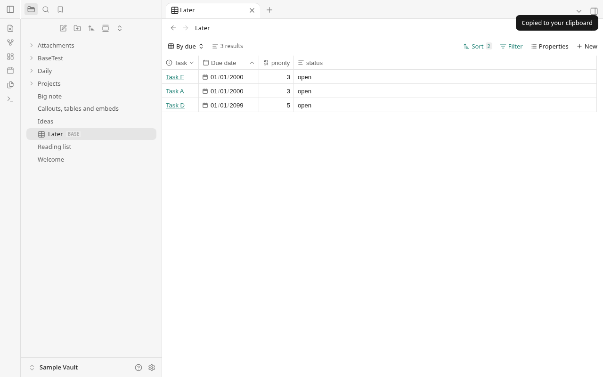
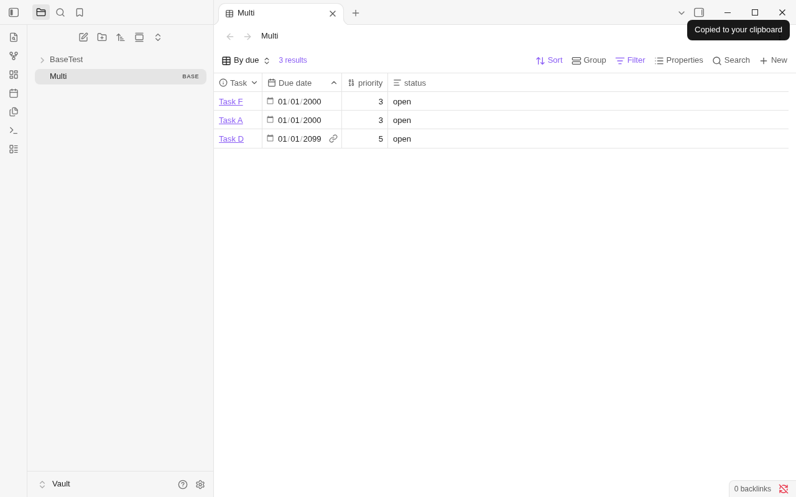
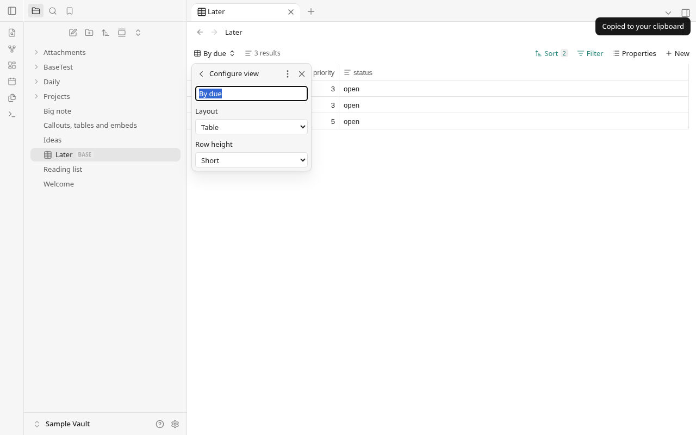
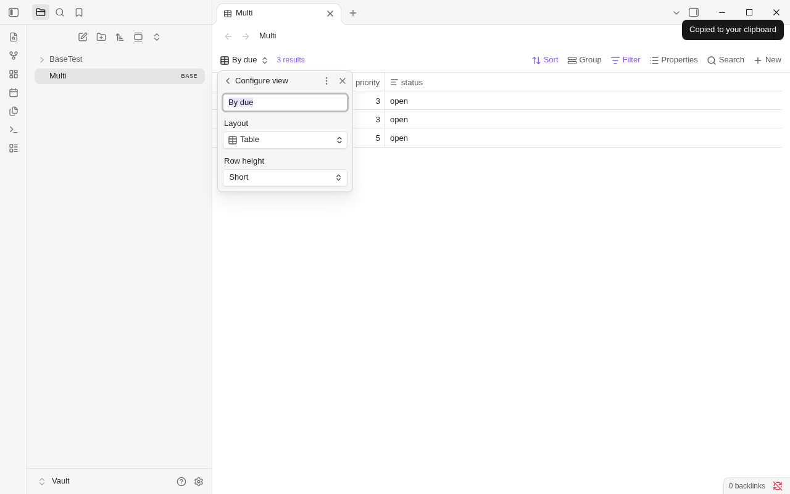
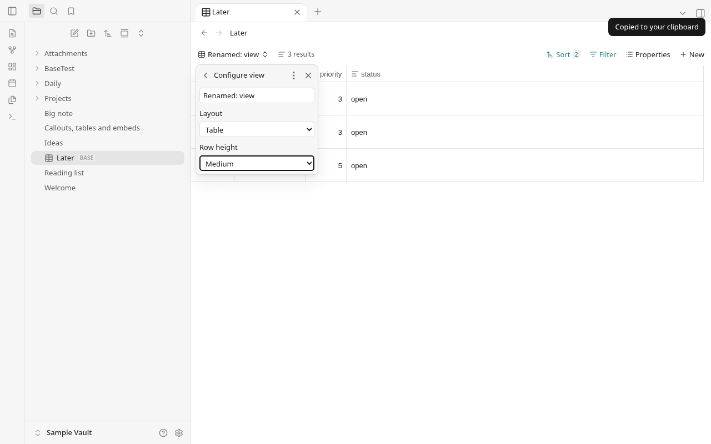
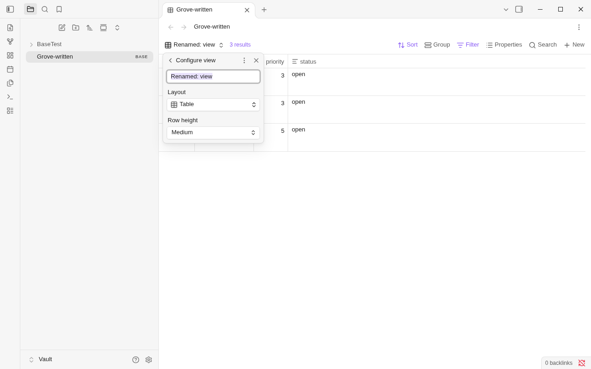

Grove / Obsidian 1.14.4 — Round 33
Results section layout
Grove
Obsidian
Top-right copy notice
Grove
Obsidian
Configure view
Grove
Obsidian
Grove-written name and Medium row height
Grove
Obsidian: same file, row order and 60px height